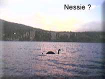
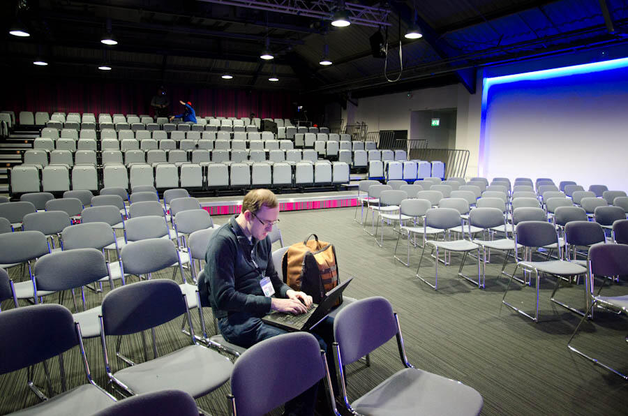

Lambdas: Myths and Mistakes
by Richard Warburton
Learning FP is so much more than just knowing what map/fold/filter/etc. do. It's more like getting good at Portal :)
@copumpkin
Who am I?
- Currently work at jClarity
- PhD
- Adopt a JSR (Date and Time + Lambdas)
- Writing a book for O'Reilly Media on Lambda Expressions in Java 8.
Talk Structure
- Background and Motivation
- Introduction to Lambda Expressions
- Beyond the Myths
- Functional Thinking
Background and Motvation
Lambda Expressions are coming in Java 8!
Lots of discussion/debate
How can we help?
Adopt-a-JSR
Adopt-a-JSR?
- Community driven standards feedback
- Hackdays
- Serve on Expert Groups
- Initiated by Martijn Verburg
Some discussion unimportant
Concrete Examples focus discussion
Introduction to Lambda Expressions
Beyond the Myths
Claim: Syntax is the most important thing about Lambda Expressions
Yeah, I liked the # syntax proposal better, too. One less character to type! :)
Have you considered 'default null'? It will save a keyword
How about a single punctuation mark, currently unused, as syntax sugar for "()->".
(_, _) -> _ + _
This is starting to look like risque ASCII art :)
Its a Myth!
Claim: Syntax is irrelevant

// Originally invalid
Stream.of(1, 2, 3)
.forEach(x -> System.out.println(x));
// Required extra ;
Stream.of(1, 2, 3)
.forEach(x -> System.out.println(x););
Difference between expectations
- Many language features
stolen!adapted - Missing Features
- Stronger Type System
- Tuples
- List construction syntax
- Prior FP experience generated requrests for features.
Framing Effect
Different reactions depending on whether something is presented as a loss or a gain.
Observation: Very little TDD
- Only a couple of developers used TDD
- Maybe a reflection on general TDD
- Maybe unfamiliarity with testing functional code
How do I test this?
list.stream()
.map(x -> 1.0 / Math.ceil(1 + Math.pow(x) + Math.atan2(0, x)))
.collect(toList());
Approach 1: Test whole function
- Don't test the lambda
- Test the method its surrounded by
- Works well for simple lambdas
Approach 2: Extract Method
double complexFunction(double x) {
return 1.0 / Math.ceil(1 + Math.pow(x) + Math.atan2(0, x));
}
list.stream()
.map(this::complexFunction)
.collect(toList());
Mistake: debugging
list.stream()
.filter(filteringFunction)
.map(mappingFunction)
.collect(toList());
peek
list.stream()
.filter(filteringFunction)
.peek(e -> System.out.println("Filtered value: " + e));
.map(mappingFunction)
.peek(e -> {});
.collect(toList());
Summary
- Syntax important, but not in the way people think
- New approaches for debugging and testing
- Take care of overloads and compiler error messages
Functional Thinking
What do I mean by Functional Thinking?
Thinking in terms of the input:output relationship and not a sequence of steps
First code that people write
List numbers = Arrays.asList(1, 2, 3);
numbers.forEach(x -> {
System.out.println(x);
});
Example Problem
Count the number of instances of each word in a document.
Example Problem
Ideal Solution (Today)
reader.lines()
.flatMap(s -> Stream.of(s.split(" ")))
.collect(groupingBy(s -> s, counting()));
// Map entries for "dad"
// [ "dad", "dad", "dad" ] => [1, 1, 1] => 3
Ideal Solution (At the time)
reader.lines()
.flatMap(s -> Stream.of(s.split(" ")))
.collect(groupingBy(s -> s, reducing(s -> 1, Integer::sum)));
Summary
- Functional Thinking the biggest 'skill gap'
- Not Java specific at all
- Requires Practise
Conclusions

Questions?
@RichardWarburto